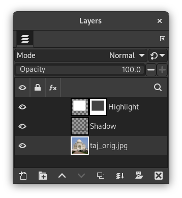

Esse filtro adiciona um efeito 3D translucido, bem sútil, demarcando a região selecionada. Este efeito 3D é conseguido através de
-
Um destaque da seleção: uma nova camada (“Destaque”) será criada acima da camada ativa, e preenchida com a cor de realce. Em seguida, uma máscara de camada será adicionada a essa camada tornando os o pixels não mascarados parcialmente transparentes.

Camada de destaque com mácara de camada
-
E então, é feita uma pintura dos lados esquerdo e do alto da seleção com a cor de realce - a camada de “Destaque” será estendida por um pixel em cima e a esquerda. Essas pequenas áreas serão opacas.
-
E por fim é aplicado um efeito de Sombra projetada no lado inferior direito da seleção.
Você pode variar essas configurações padrão, por exemplo selecionando cores diferentes para destaque ou para a sombra e mudar as direções de deslocamentos.
![[Nota]](images/note.png)
|
Nota |
|---|---|
|
If the image is in indexed mode, this menu entry is disabled. |
Existem dois grupos de opções, cada um controlando o destaque ou a sombra, e uma caixa de seleção para o comportamento da seleção.

- Deslocamento X dos brilhos, Deslocamento Y dos brilhos
-
Os lados esquerdo e de cima da seleção são pintados com a cor de destaque. O deslocamento do brilho é o tamanho (largura ou altura) da área respectiva. Se o deslocamento for menor que 0 (isso é o padrão), a área esquerda ou do topo será colorida. Para deslocamentos maiores que 0, as áreas a direita ou abaixo serão coloridas.
- Cor de destaque
-
Esta é a cor usada para destacar a área selecionada. O padrão é branco, mas ao clicar no botão um seletor de cores aparece e você pode escolher qualquer outra cor.
- Opacidade dos brilhos
-
A seleção será coberta por uma área parcialmente transparente preenchida com a cor de destaque. Esta opção permite que você defina o nível de transparência. Uma vez que uma máscara de camada será usada, os números válidos são de 0 (totalmente transparente) até 255 (totalmente opaco).
O padrões de opacidade para a camada de destaque é 66, o que equivale a 26%.
- Opções para o Sombra projetada
-
Essas opções funcionam como as opções respectivas do filtro Sombra projetada (sem redimensionamento). Resumidamente:
- Cor da sombra projetada
-
Clique no botão para abrir um seletor de cores.
- Opacidade da sombra projetada
-
A opacidade (0% - 100%) de a camada que contém a sombra.
- Raio de desfoque da Sombra projetada
-
O raio usado pelo filtro Desfocagem gaussiana, que vai ser aplicado à sombra.
- Deslocamento X da sombra , Deslocamento Y da sombra
-
Direção e quantidade, pelas quais a sombra será movida, afastando-se da seleção.
- Manter seleção
-
Se for marcada, a seleção ativa permanecerá ativa quando o filtro foi aplicado.